Notas, conocimiento personal y arquitectura visual en un solo espacio. 100% local-first, sin telemetría, sin suscripciones y sin Electron.
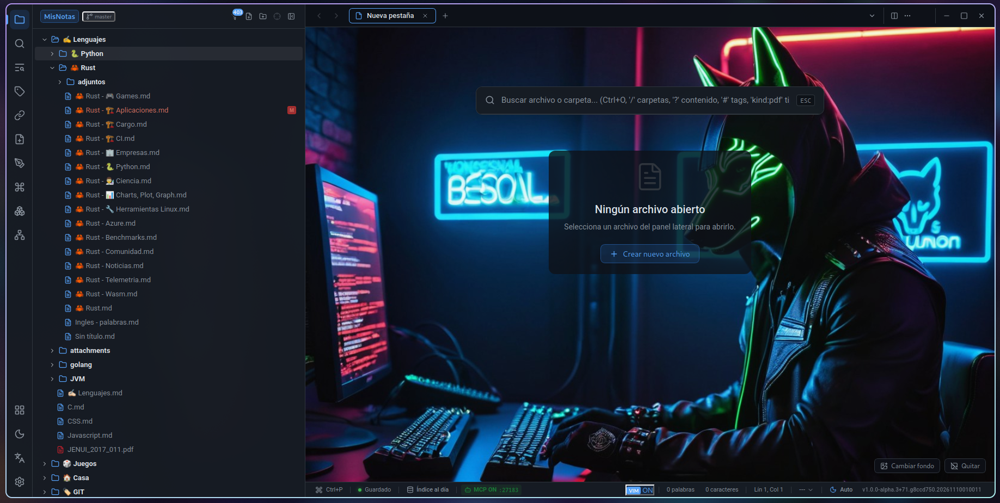
La mayoría de herramientas modernas consumen cientos de megabytes de RAM por usar Electron, o encierran tus datos en formatos propietarios y suscripciones en la nube. Synapse parte de una premisa simple: tus archivos son tuyos y la herramienta debe ser inmediata.
Backend en Rust con arquitectura Cebolla e interfaz en Svelte 5. Una fracción mínima de memoria.
Archivos estándar, sin bases de datos opacas ni sincronización obligatoria. Funciona offline.
Busca sobre decenas de miles de notas, diagramas, PDFs y documentos a la velocidad del teclado.
Sin plugins de terceros para lo esencial. Cada pieza está pensada para trabajar junta.
malloc_trim)rayon + jwalk.md, .excalidraw.md, .d2, .puml, .mmdkind:pdf, kind:d2, kind:excel…hs: / headings:.pdf y .docx[[nota#Título]] y transclusión ![[nota#Título]]expected_hash)outline_only y section para ahorrar tokensshortcuts.jsoncGit integrado (commits, historial, ramas, stage/unstage, push con Ctrl+Shift+K) y un diff multi-modal que entiende imágenes y diagramas.
Dos paneles con zoom independiente, o modo píxel a píxel que resalta en magenta cada cambio con porcentaje y conteo exacto.
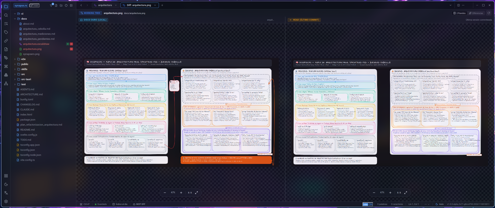
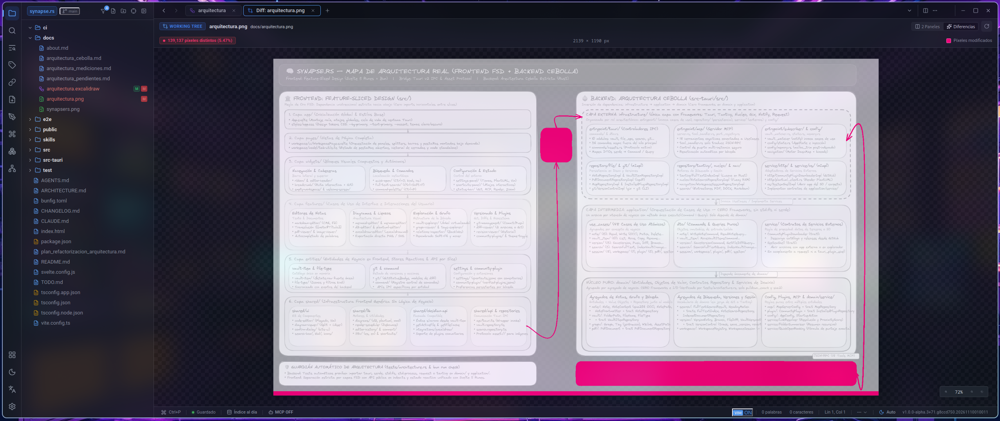
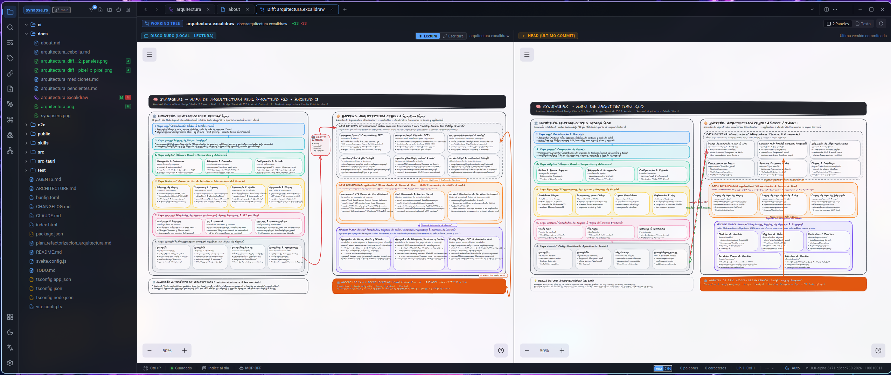
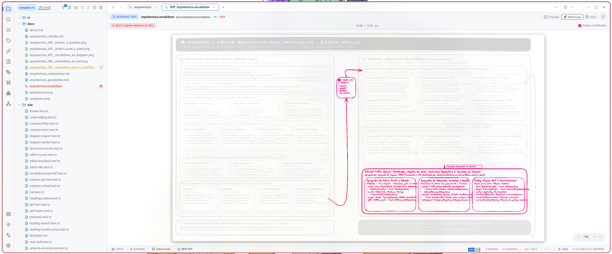
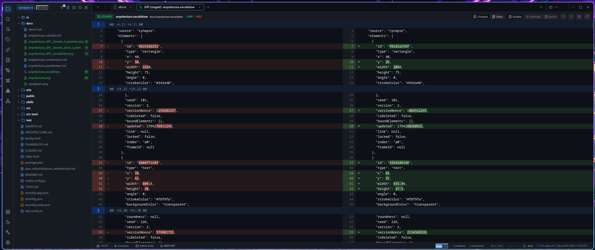
Excalidraw, D2, Mermaid y PlantUML con tres modos: visual en paralelo (con edición local sobre la marcha), render a píxeles para localizar cualquier trazo modificado, y texto línea por línea para auditar el código o el JSON.
Temas integrados con variantes clara y oscura, listos para usar.
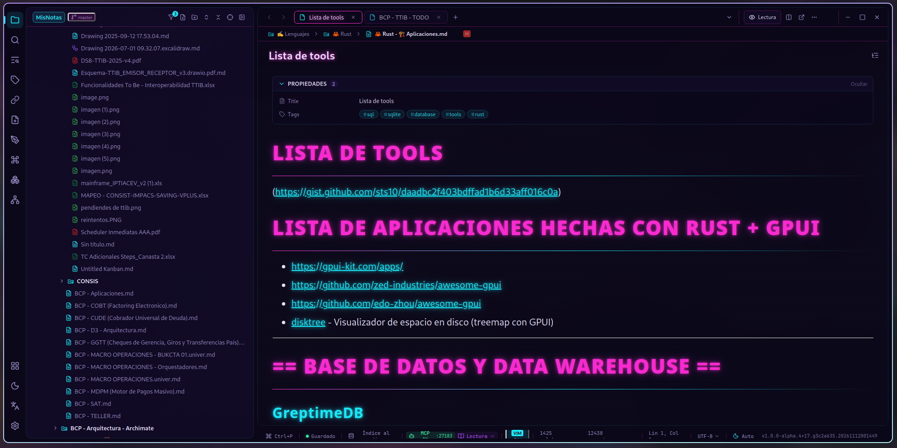
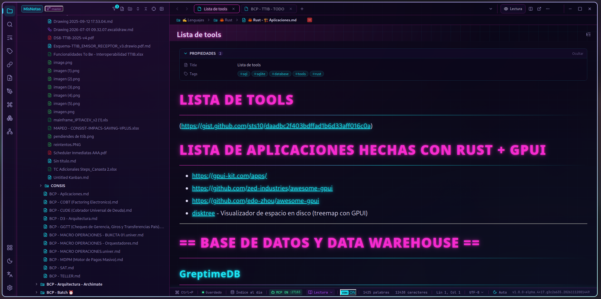
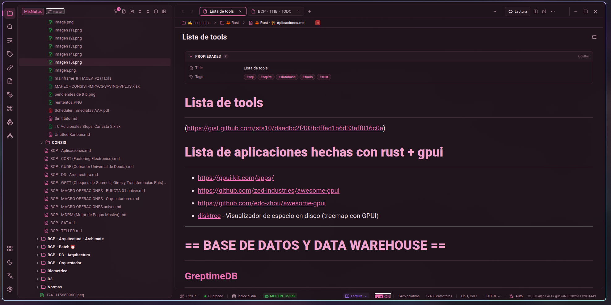
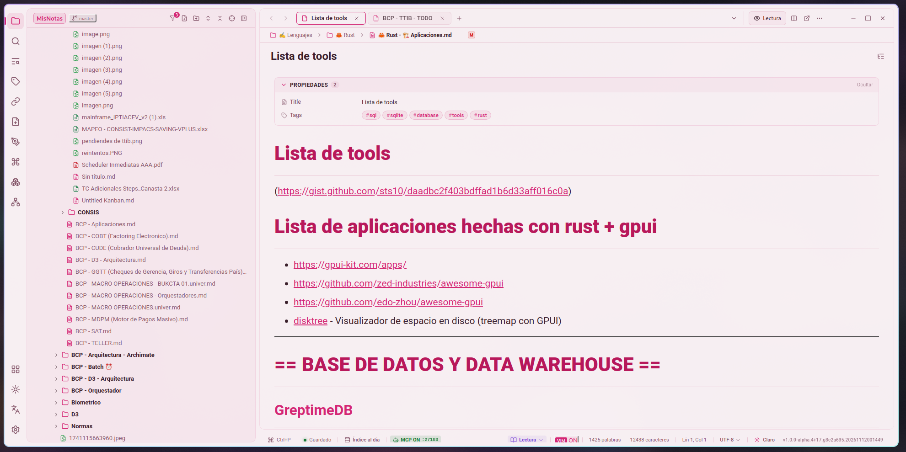
| Aspecto | Synapse.rs 🧠 | Obsidian | Notion | VS Code |
|---|---|---|---|---|
| Arquitectura | Rust + Tauri v2 (webview nativo) | Electron | Web / Electron | Electron |
| Soberanía de archivos | 100% local / formatos abiertos | 100% local | Nube (propietario) | 100% local |
| Búsqueda en PDF / DOCX | Nativa (Tantivy) | Plugins | En la nube | Extensiones |
Filtros kind:, hs: | Nativos | Plugins | No | Extensiones |
| D2, Mermaid, PlantUML | Nativos + export PNG/SVG | Plugins | Básico | Extensiones |
| Lienzo Excalidraw | Nativo | Plugin | No | Extensiones |
| Git | Integrado (gix + Git) | Requiere CLI | No | Requiere CLI |
| Diff visual de diagramas e imágenes | Nativo | No | No | Extensiones |
| Servidor MCP para IA | Nativo (18 herramientas, OCC) | Plugins | No | Extensiones |
| Portabilidad | Binario único | Instalador / AppImage | Instalador | Instalador |
Una estricta separación de responsabilidades garantiza mantenibilidad, velocidad y estabilidad a largo plazo.
Feature-Sliced Design en capas unidireccionales.
Arquitectura Cebolla: dominio puro sin frameworks ni I/O, 48 casos de uso atómicos y adaptadores para disco, Tantivy, Nucleo, Gix y MCP.
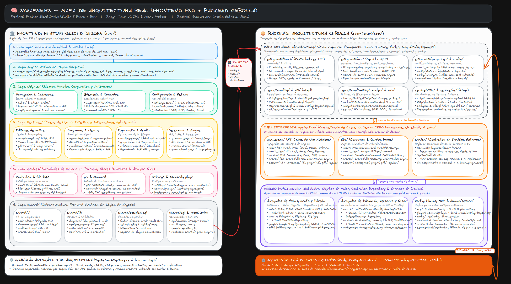
Sin instaladores obligatorios, sin dependencias del sistema y sin permisos de administrador. Descárgalo, ejecútalo y empieza a pensar.
synapsers · synapsers.exe